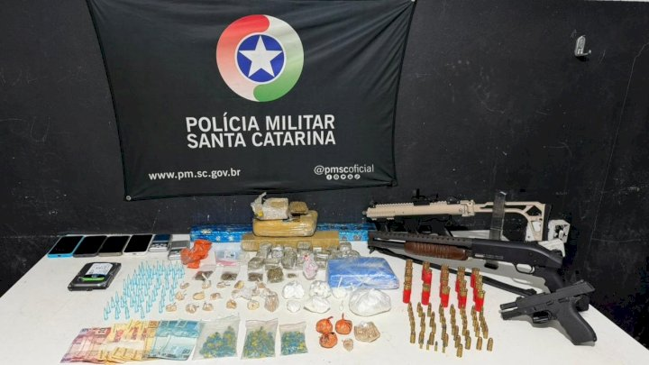
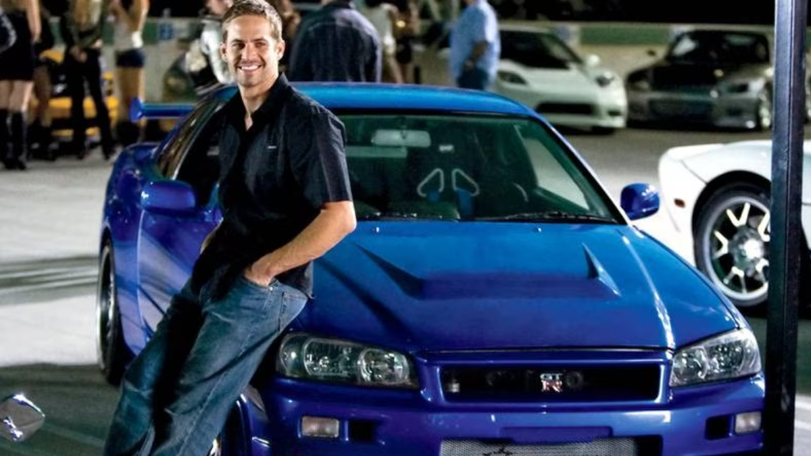

Serra Catarinense
Homem tenta fugir de abordagem e acaba preso com mais de 20 kg de drogas

Operacional
Ação policial apreende submetralhadora, drogas e prende seis homens em Itajaí
Cidadão
Unidades
Boletin de Ocorrencia
Concursos
Ouvidoria

Procurado
Polícia emite alerta máximo: Piloto extremamente perigoso segue foragido.
As autoridades intensificaram nas últimas horas a busca por um indivíduo considerado altamente perigoso e habilidoso ao volante,
3º Batalhão de Polícia Militar - Canoinhas - Por 3º Sargento Everton Vieira em 24/04/2026 16:36:29
Evento Esportivo
Serra do Rio do Rastro terá interdição total neste domingo
Medida visa garantir a integridade física dos participantes da prova ciclística e prevenir acidentes em um dos trechos mais sinuosos de Santa Catarina
CPMRv - Comando de Polícia Militar Rodoviária - Florianópolis - Por 3º Sargento Rodrigo Costa em 24/04/2026 16:36:29
Debate
Polícia Militar de Santa Catarina participa da 1ª Jornada de Direito de Trânsito em Florianópolis
Encontro possibilita o diálogo entre os diversos órgãos que compõem o ecossistema de trânsito em Santa Catarina
CPMRv - Comando de Polícia Militar Rodoviária - Florianópolis - Por 3º Sargento Rodrigo Costa em 24/04/2026 16:36:29
Ações Institucionais
Polícia Militar participa do 4º Seminário Regional sobre Autismo em Lages
Evento reuniu especialistas e profissionais para debater práticas e avanços no atendimento às pessoas com Transtorno do Espectro Autista
2º CRPM - 2º Comando Regional de Polícia Militar - Lages - Por 3º Sargento Ieda Arruda Knoll em 24/04/2026 18:15:48
Serra Catarinense
Homem tenta fugir de abordagem e acaba preso com mais de 20 kg de drogas
Em buscar no veículo, foram localizados quase 20 quilos de maconha e dois tabletes de cocaína
2ºCRPM/6ºBPM - 6º Batalhão de Polícia Militar - Florianópolis - Por Cabo Karla Kauling em 24/04/2026 18:13:48
Operacional
Ação policial apreende submetralhadora, drogas e prende seis homens em Itajaí
Ao todo, foram apreendidas três armas de fogo além de crack, cocaína, maconha e ecstasy
2ºCRPM/6ºBPM - 6º Batalhão de Polícia Militar - Florianópolis - Por Cabo Karla Kauling em 24/04/2026 18:13:48
Mais Lidas
Procurado
Polícia emite alerta máximo: Piloto extremamente perigoso segue foragido.
24/04/2026 18:13:48
01
Operacional
Ação policial apreende submetralhadora, drogas e prende seis homens em Itajaí
24/04/2026 18:13:48
02
Debate
Policia Militar de Santa Catarina participa da 1ª Jornada de Direito de Trânsito em Florianópolis
24/04/2026 16:36:29
03
Ituporanga
Dois homens são presos após série de roubos com reféns na zona rural
24/04/2026 14:38:31
04
Acões Institucionais
Policia Militar participa do 4º Seminário Regional sobre Autismo em Lages
24/04/2026 18:15:48
05
Serra Catarinense
Homem tenta fugir de abordagem e acaba preso com mais de 20kg de drogas
24/04/2026 18:13:48
06